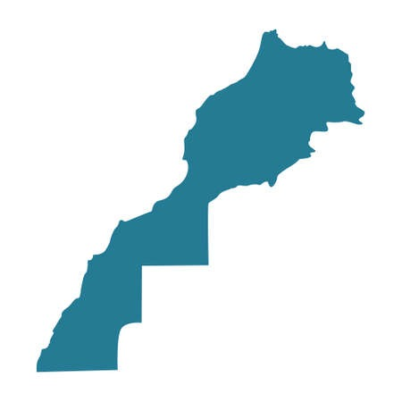
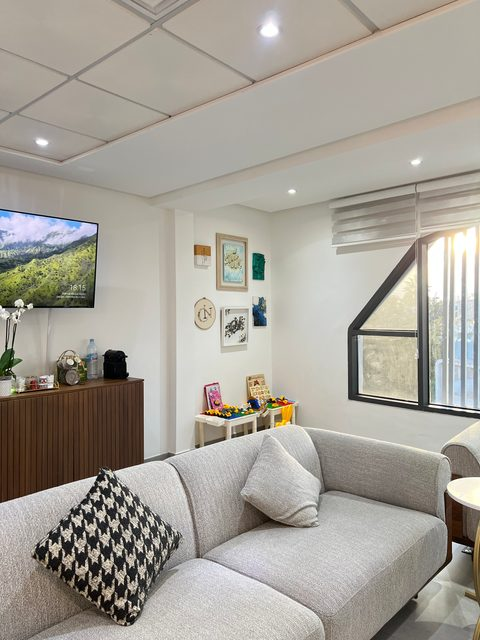
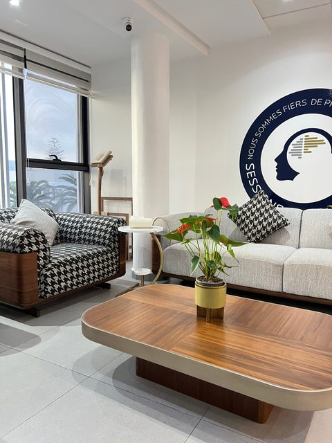
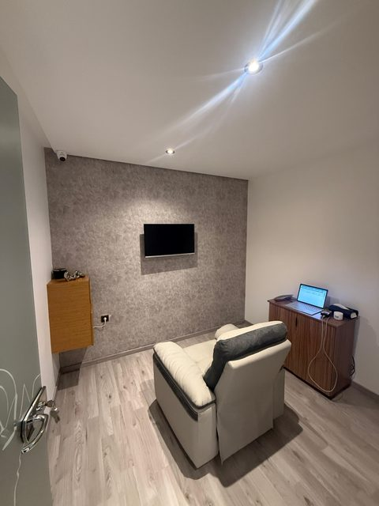
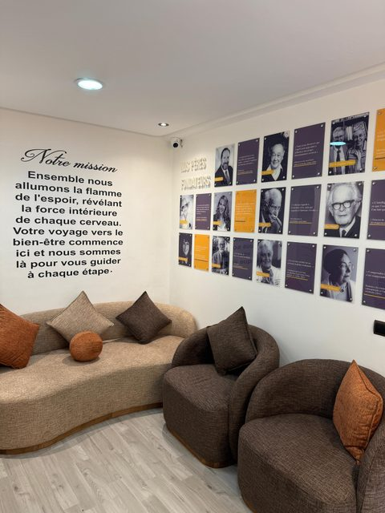
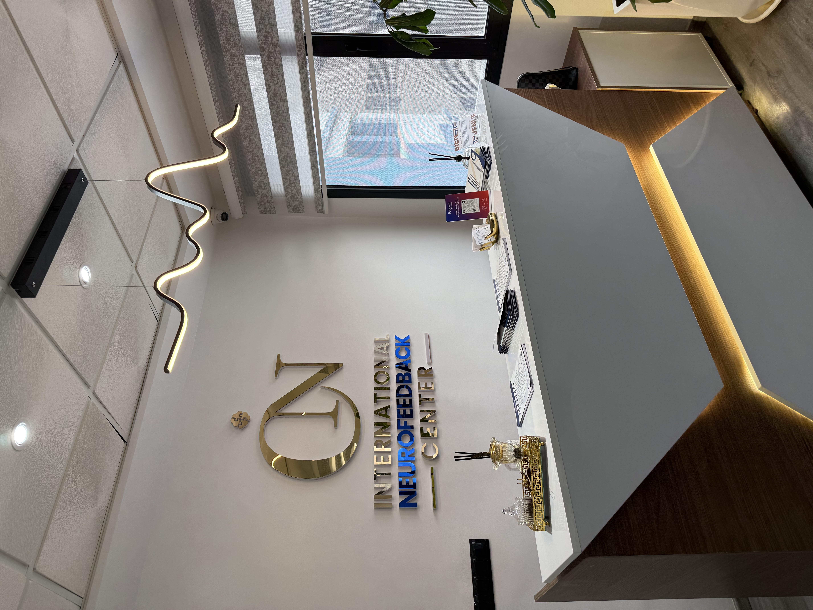
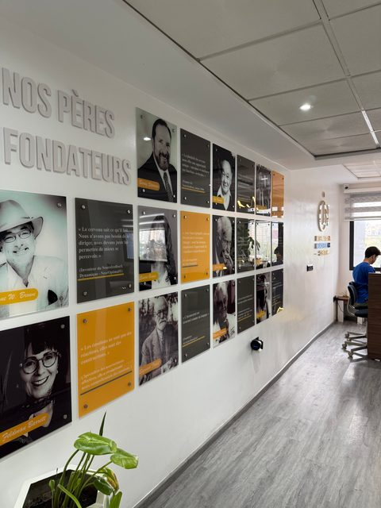

Nos Centres au Maroc
Un espace premium et humain dédié à la régulation neuro‑sensible.

INFC Casablanca
Adresse : Nº12 2ème étage, Immeuble Living office 362 BD Ghandi Oasis, Casablanca, Maroc
Téléphone : 0522991783
Horaires : Lundi‑Samedi : 09h00 – 19h00
Équipe : Dr. Chadia Chakib (Fondatrice), 3 praticiens certifiés



INFC Marrakech
Adresse : N°33 3ème étage, Résidence Le Noyer A, Rue Ibn Sina Gueliz, Marrakech, Maroc
Téléphone : 0524207263
Horaires : Lundi‑Samedi : 09h00 – 18h30
Équipe : 2 praticiens certifiés, 1 coordinateur



INFC Tanger
Adresse : N° 25 2ème étage, Résidence El Jaghaoui, Tower Route Des Abattoirs, Tanger, Maroc
Téléphone : 0539367519
Horaires : Lundi‑Samedi : 09h00 – 19h00
Équipe : 2 praticiens certifiés



INFC Kénitra
Adresse : Nº2 Résidence el waha rue imam ali et saad zaghlou, Kénitra, Maroc
Téléphone : 0622606033
Horaires : Lundi‑Samedi : 09h00 – 19h00
Équipe : Praticiens certifiés INFC